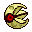
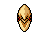
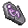
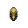

Pokédex / #337

Lunatone #337
RockPsychic
Because it turns active on nights of the full moon, it is said to have some link to the lunar phases.
Generation 3 · Hoenn

Stats
| Attack | 55 | |
|---|---|---|
| Defense | 65 | |
| Sp. Atk | 95 | |
| Sp. Def | 85 |
In the wild
| Wild level | 40–50 |
|---|---|
| HP | 90 |
| Experience | 10 |
| Egg groups | Mineral |
Evolution
- Does not evolve.
Moves
| Level | Move | Type | Category | Power | Energy | Cooldown | Effect | |
|---|---|---|---|---|---|---|---|---|
| 1 | Tackle | Normal | Physical | 15 | 15 | 1s | Tackle is one of the most common and basic moves a Pokemon learns. It deals damage with no additional effects. | |
| 5 | Power Gem | Rock | Special | 80 | 90 | 16s | Power Gem inflicts damage and has no secondary effect. | |
| 10 | Rock Throw | Rock | Physical | 50 | 50 | 8s | Rock Throw deals damage and has no secondary effect. | |
| 15 | Moonblast | Fairy | Special | 95 | 95 | 17s | Borrowing the power of the moon, the user attacks the target. This may also lower the target's Sp. Atk stat. | |
| 20 | Confusion | Psychic | Special | 50 | 60 | 12s | Confusion deals damage and has a 10% chance of confusing the target. | |
| 25 | Rock Slide | Rock | Physical | 38 | 85 | 17s | Rock Slide deals damage and has a 30% chance of causing the target to flinch. | |
| 30 | Psychic | Psychic | Special | 90 | 100 | 21s | Psychic deals damage and has a 10% chance of lowering the target's Special Defense by one stage. | |
| 35 | Psyshock | Psychic | Special | 80 | 85 | 12s | The user materializes an odd psychic wave to attack the target. This attack does physical damage. | |
| 40 | Future Sight | Psychic | Special | 120 | 120 | 15s | Future Sight deals damage, but does not hit until two turns after the move is selected. | |
| 45 | Stone Edge | Rock | Physical | 100 | 100 | 15s | Stone Edge deals damage and has an increased critical hit ratio. | |
| 50 | Hypnosis | Psychic | Status | – | 80 | 60s | Hypnosis puts the target to sleep. | |
| 55 | Dream Eater | Psychic | Special | 100 | 120 | 15s | Dream Eater deals damage only on sleeping foes and the user will recover 50% of the HP drained. | |
| 60 | Explosion | Normal | Physical | 250 | 100 | 180s | Explosion deals high damage, but causes the user to faint. | |
| 65 | Harden | Normal | Status | – | 70 | 60s | Harden raises the user's Defense by one stage. | |
| 70 | Rock Tomb | Rock | Physical | 60 | 70 | 13s | Rock Tomb does damage and lowers the opponent's speed one stage. |
Field abilities
FlashBlinkTeleport
Special abilities
Levitate
Egg moves
None
Technical machines
BlizzardCalm MindDouble TeamDream EaterEarthquakeExplosionHyper BeamIce BeamLight ScreenProtectPsychicRain DanceReflectRestRock SlideRock TombSafeguardSandstormShadow BallSubstituteToxic
Drops
| Item | Amount | Chance | |
|---|---|---|---|
| sandbag | 1 | 22.4% | |
| twisted spoon | 1 | 13.5% | |
| stone orb | 1 | 10.8% | |
| shadow rock | 1 | 9.62% | |
| night orb | 1 | 8.97% | |
| battle stone | 1 | 8.97% | |
| night orb | 1 | 8.97% | |
| heavy stone | 1 | 5.38% | |
| rare sandbag | 1 | 3.85% | |
| clay lump | 1 | 3.85% | |
| grey-blue powder | 1 | 3.37% | |
 | astral glyph | 1 | 2.69% |
| plasmatic lightning | 1 | 2.69% | |
 | lunatone doll | 1 | 0.1% |
| Stone Plate | 1 | 0.025% | |
| Mind Plate | 1 | 0.025% | |
| held hard stone | 1 | 0.01% | |
| held twisted spoon | 1 | 0.01% | |
| TM 27 | 1 | 0.005% | |
| TM 43 | 1 | 0.005% | |
| TM 45 | 1 | 0.005% |